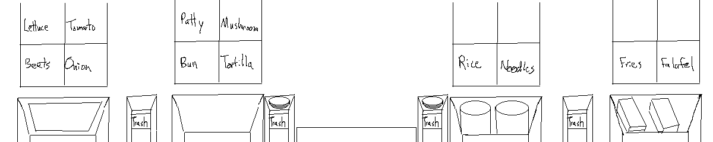
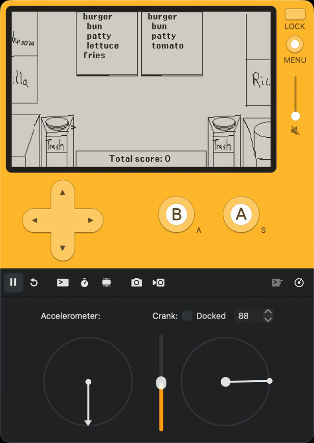

Cookin’ Beets is a kitchen simulation inspired by Cook, Serve, Delicious!
and Overcooked for the Playdate.
The player receives orders and must gather, prepare, cook,
and assemble dishes to satisfy customers.
I also wanted Cookin’ Beets to be a rhythm game, or at least
have reactive music elements based on the demand surges and cooking timers.
Those elements were never implemented or designed, but were the main
inspiration for the name: beats <-> beets.
Why the Playdate? One of the main reasons I was able to finish my previous game
Dead Rise
was the constrained complexity.
I built the game for an NES-like fantasy console,
which was the perfect techical and artistic challenge.
I could fully understand the system and art, without being overwhelmed by the complexity of modern engines.
The Playdate seemed like a similar opportunity, offering a tight
Lua development kit, 1-bit display, and some unique design opportunities
with the crank. My intuition was correct about the dev environment:
working with the Playdate SDK was awesome and I learned a lot about
Lua, game APIs, and even a bit of embedded C.
But I was quickly overwhelmed by the art and level design,
and soon abandoned the project.
Why Abandoned?
Art Complexity
Dead Rise had an 8-bit, 3 color palette sprite system. Assembling
a tileset was straightforward and fun with https://www.piskelapp.com
even for my wife and I who are not artists.
The beauty of 8-bit is that the art style is very forgiving:
you can evoke your idea without having to accurately represent it:
I choose the Playdate platform because I thought it would also be
simple to make art for.
The Playdate has a 1-bit black and white display, so I could continue
to use pixel art. And the Playdate as a very high pixel density,
so I could fill the kitchen with lots of ingredients and stations.
But the Playdate’s high pixel density meant that I couldn’t just draw simple shapes:
the image needed to be recognized as the ingredient, so the player could distinguish between an onion and a hamburger patty. This makes it harder to “evoke” or “allude” to an ingredient, especially
when I couldn’t use color.
Level Design
My vision was to have multiple kitchens, each with different
layouts, ingredients, and customer orders, like the restaurants
in Cook, Serve, Delicious!
Level design would be oriented around the complexity and timing of orders.
Orders would start with simple combinations of ingredients and progress
in complexity. And as the player progressed, the timing of the orders
would get tighter.
I think the idea is solid, but I wasn’t motivated to
tinker and iterate. I had more fun making tooling to design levels by customizing placement,
stations, and ingredients that actually making the levels.
For example, I made a small JavaScript app to load background level images
that you could use to tag zones for ingredient placement and cooking stations.
Game Overview
Each kitchen is a fixed width background image:

The playdate crank moves a window along the background image
to reach different areas of the kitchen:

The core gameplay loop:
- orders come in at the kitchen window
- orders are timed
- orders have ingredients that must be prepared, cooked, and assembled
- the player controls a cursor to select ingredients and cooking stations.
- ingredients like
patty must be cooked on the grill
- others like
lettuce must be prepared by manually chopping them on the cutting station
- the ingredients are assembled on a plate and delivered to the order.